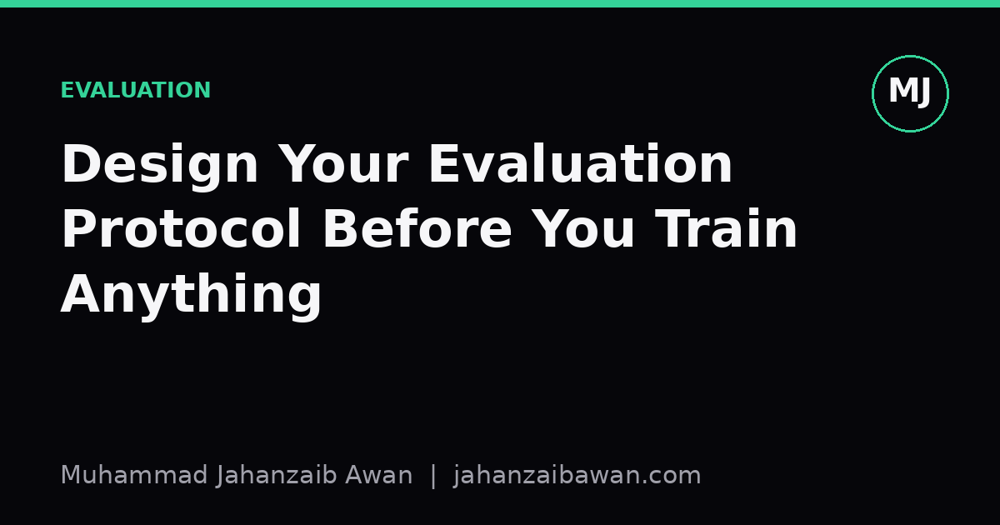

Design Your Evaluation Protocol Before You Train Anything
A fixed, written-down evaluation plan is the cheapest insurance you can buy against fooling yourself with a model that looks good but isn't.

Why the order of operations matters
Most machine learning projects go wrong quietly. Nobody writes a bug that crashes the program; instead, someone writes an evaluation setup that is subtly too generous, and the model looks fantastic right up until it meets real data. I have come to think of evaluation design as the one part of a project that must happen before training code exists, not after. If you write your training loop first and bolt on a train/test split as an afterthought, you have already made dozens of small decisions, which rows go where, how you handle duplicates, what counts as a correct answer, without ever treating them as decisions at all. They just happen, usually in the direction that makes the numbers look better.
The core problem is that a model evaluation protocol is not a technical detail, it is a claim about what question you are answering. If I say my model gets ninety two percent accuracy, that number is meaningless without knowing exactly what was held out, how it was held out, and what a correct prediction actually means for the task. Deciding this upfront forces you to be honest about the claim before you have any emotional investment in a result. Once a number exists, especially a good one, it becomes very hard to go back and admit the split was flawed.
There is also a practical reason to do this early: it is far cheaper to redesign a split before you have trained twenty models against it than after. I have seen projects where a leakage problem was discovered late, and every single experiment, every hyperparameter search, every ablation, had to be rerun. That is not just wasted compute, it is wasted weeks. A protocol written on day one, even an imperfect one, gives you a stable foundation that later experiments can be compared against fairly.
The leakage problem in concrete numbers
Leakage is the most common way an evaluation protocol fails, and it rarely looks dramatic. Suppose you are building a model to predict whether a customer will cancel a subscription, using a dataset of 50,000 customer records collected over eighteen months. If you shuffle all rows randomly and split 80/20 into train and test, you might get a test accuracy of 91 percent. That number can be almost entirely fake if customers appear multiple times across different months, because the model has effectively seen that customer's future behaviour during training. The leakage is not a bug in your code, it is a mismatch between how the split was made and how the model will actually be used in deployment, where it only ever sees customers it has not seen before, at a point in time before the outcome is known.
A leakage-aware protocol would instead split by customer identity and by time: train on customers whose entire history falls before a cutoff date, and test only on customers or events that occur after it. When I imagine running that same 50,000-row dataset through a time-respecting split, it would not be surprising to see accuracy drop to something like 78 or 80 percent. That drop is not the model getting worse, it is the earlier number revealing itself as an illusion. The 91 percent was answering a different, easier question: can the model recognise patterns it has partially memorised, not can it predict genuinely unseen future behaviour.
The same logic applies far beyond customer churn. Text near-duplicates in NLP datasets, overlapping patients across train and test sets in medical data, images of the same object taken seconds apart ending up on both sides of a split, these are all variations of the same mistake. The fix is always the same in spirit: define the unit that must not leak, whether that is a customer, a patient, a document, or a time window, and split along that boundary deliberately rather than relying on random shuffling.

Baselines, metrics, and the discipline of writing it down
A protocol is incomplete without a baseline, because a number without a reference point cannot tell you whether you have actually learned anything useful. Before training a single real model, decide what a trivial model would score. For a binary classification task with a 70/30 class split, a model that always predicts the majority class gets 70 percent accuracy for free. If your carefully engineered model later scores 74 percent, you have not built something impressive, you have barely beaten a model with no intelligence at all. Knowing this threshold before you start changes how you interpret every subsequent result, and it stops you from celebrating a number that sounds good in isolation but is mediocre in context.
Choosing the metric itself deserves the same upfront rigour. Accuracy is a poor choice for imbalanced problems, as the majority class example above shows; precision, recall, F1, or area under the precision recall curve often tell a more honest story. For a fraud detection task where only two percent of transactions are fraudulent, a model that never flags anything scores 98 percent accuracy and is completely useless. Deciding in advance that you care about recall at a fixed false positive rate, say catching 80 percent of fraud while flagging no more than one percent of legitimate transactions, gives you a concrete, business-relevant target rather than a vague instinct to maximise accuracy.
Finally, write the whole protocol down before training starts: the exact split logic, the metric and its threshold, the baseline score, and the number of times you are allowed to touch the test set. That last point matters more than people expect. If you evaluate on the test set after every tweak, you are slowly fitting to it through your own decisions, even without meaning to. A disciplined protocol reserves the test set for a small number of final checks and uses a separate validation set, ideally built with the same leakage-aware logic, for everything in between. None of this is exciting work, and it produces nothing you can show off in a demo, but it is what separates a result you can trust from one that merely looks good on a slide.